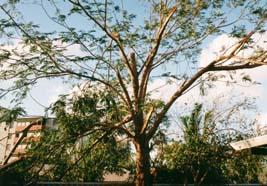
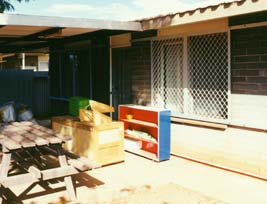

３８．「サイクロン騒ぎ」（写真有）
 オーストラリア、西オーストラリア州ポートヘドランドでは夏にサイクロンがやってくる。夏と言っても日本では冬になる１２月
から２月である。ここポートヘドランド付近否北海岸全般は間違いなく陸の孤島である、サイクロンが来てもテレビ、ラジオの全国
版では実況中継などありえない。日本で言えば韓国に台風が上陸しても日本国内では実況中継しないのと同じである。日本本土に上
陸しよう物なら、ほぼ分刻みで要するにずっと台風のニュースになる。
オーストラリア、西オーストラリア州ポートヘドランドでは夏にサイクロンがやってくる。夏と言っても日本では冬になる１２月
から２月である。ここポートヘドランド付近否北海岸全般は間違いなく陸の孤島である、サイクロンが来てもテレビ、ラジオの全国
版では実況中継などありえない。日本で言えば韓国に台風が上陸しても日本国内では実況中継しないのと同じである。日本本土に上
陸しよう物なら、ほぼ分刻みで要するにずっと台風のニュースになる。
これに慣れて、ここポートヘドランドに赴任すると怖い物がある。サイクロンが接近すると道路に旗が揚がる。青は接近中、黄色
は注意、業務中止、赤なら通過中、外出禁止の意味である。さて、この旗もどこに有るのか分からないこともある。赤旗になると、
パトロールカーがサイレンを鳴らしながら市内と言っても人口７０００人の町をパトロールしながら「外に出ないように」注意を促
している。
全国版のテレビ、ラジオでは素知らぬ顔でお笑い番組等を流している。ローカルのラジオ放送でも１時間に１回サイクロン情報を
流す位である。直撃するとさすがに頻度は多くなり１５分に１度になる。電話で問い合わせが出来るがこれは２時間に１回内容が更
新されるだけである。ＦＡＸでも情報を貰える、これは文字情報と衛星写真を受け取れる。事務所にはＦＡＸがあるが自宅にはない
ので、電話のアナウンスが頼りになり、聞く度に東経、南緯の位置情報と進路方向、速度、風速などを聞き取って、白地図に書き込
み、台風の進行状況を自分で確認する。アナウンスで、日本で言えばどこからどの位の距離に台風が居ると言う様にこちらでも同じ
事を話す。が、英語圏では当然であるが「距離」が最初に言われ次に「場所」を数カ所丁寧にアナウンスする。必死にポートヘドラ
ンドの名前が出てくるかを聞く、無ければ次の「距離」と「場所」と繰り返す。あ！ポートヘドランドと言ったと思ったときには距
離数が幾らだったか分からなくなっている。
だから、東経、南緯を聞き取るようにしていた。順序はローケーションと言って、数字、東経、数字、南緯と言うので、ローケーシ
ョンと言われたら次の数字を聞き取る、東経であろうが南緯であろうが数字さえ聞き取れればそれが東経か南緯かは判断が付く。整
数３桁は東経、２桁は南緯に決まっている。
赴任中１度サイクロンが直撃してきた。過去にも直撃があり、海に面している大方の家の屋根が吹き飛んだことがあったらしい。
日本のように山が無く、海と平原であるから強風が吹いたらまともに受けてしまうので大変である。サイクロンが接近した場合のマ
ュアルに従って我が家も準備をした。バスタブに水を入れておく、鍋釜に飲み水を準備する、停電になると料理が一切出来なくなる
のでおにぎりで３食分とおかずを作っておく。雨風がひどくなる、そして停電。大雨のお陰で夏にもかかわらず気温が３０度前後ま
で下がり、クーラーが無くても十分問題が無かった。我が家はする事が何もなくトランプを始める・・。

雨風がどんどんひどくなり 庭の木が大きく揺れて今にも折れそうである、そして鈍い音を立ててブスと折れてしまった。サイクロンの中心は間もなくである。 そうこうしていたら、少し雨風が弱まった。ラジオではサイクロンの目がポートヘドランド上空に来ている、３０分後に再度雨風が ひどくなるので外に出ないようにと盛んに注意を促している。家族共々、サイクロンが来るまでこれほどひどかったのだから、またひどくなると心配していた。１時間経っても何ともない。そ して２時間、３時間、４時間と何ともない。その内外で人の声が盛んにし始めて日が照り始める。あのサイクロンは何処へ行ったの だろうか、忽然と消えたようであった。そして電気が来た。翌日出勤したら、皆昨日のサイクロンは何だったんだと言っていた。
昨日２００１年８月２２日に日本に台風１１号が関東に来た、全く同じような現象であった。来るだいぶ前がひどく、近づくに従 って弱まり、横浜上空に来た時は横浜では日が差しそうな感じである。きっとオーストラリアもあのサイクロンは同じように前触れ だけがひどかったのかもしれない。

オーストラリアのサイクロンマニュアルに多少滑稽に感じる注意が有る、しかし守らなければならない事である。窓ガラスの近くに寄らないこと。（物が飛んできてガラスを割る。当地では窓に鉄格子が付いている）
身の安全を確保できない所で遭遇した場合は、地面に伏せてサイクロンが通過するのを待つこと。（立っていると吹き飛ばされま す。実際には怖くて出来ないでしょう、FLOODWAYが有るように、そこが洪水になる恐れが十分にあります）
日本にはないサービスがあります。電話番号「０００」でステート・イマージャンシー・サービスです。レスキュー隊で如何なる救 援活動をしてくれます。そして必要に応じて警察、消防署、病院も連絡を自動的にしてくれます。特に慌てて電話番号が分からなけ れば「０００」で全ていいのですから便利です。日本は１１０、１１９と他は調べなければ分かりませんよね。「０００」なら子供 でも簡単に覚えられますよね、良いシステムと思います。